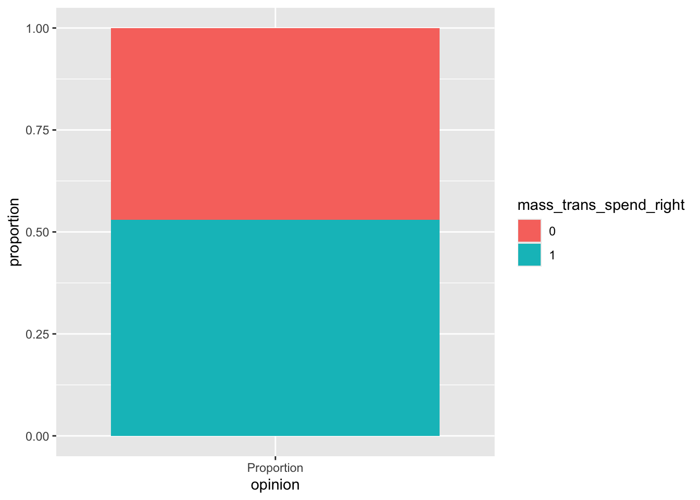
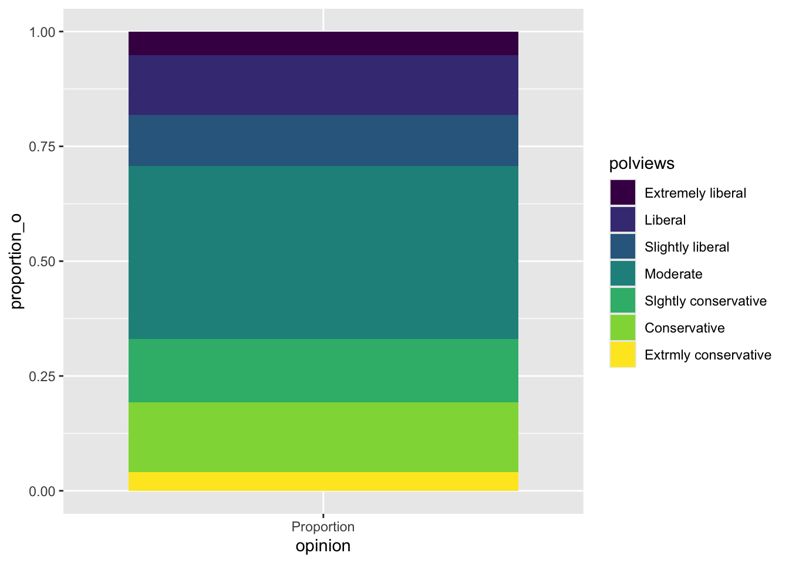
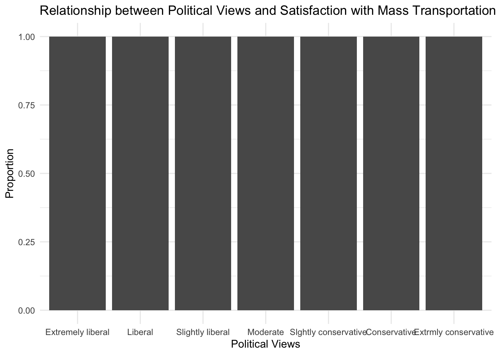
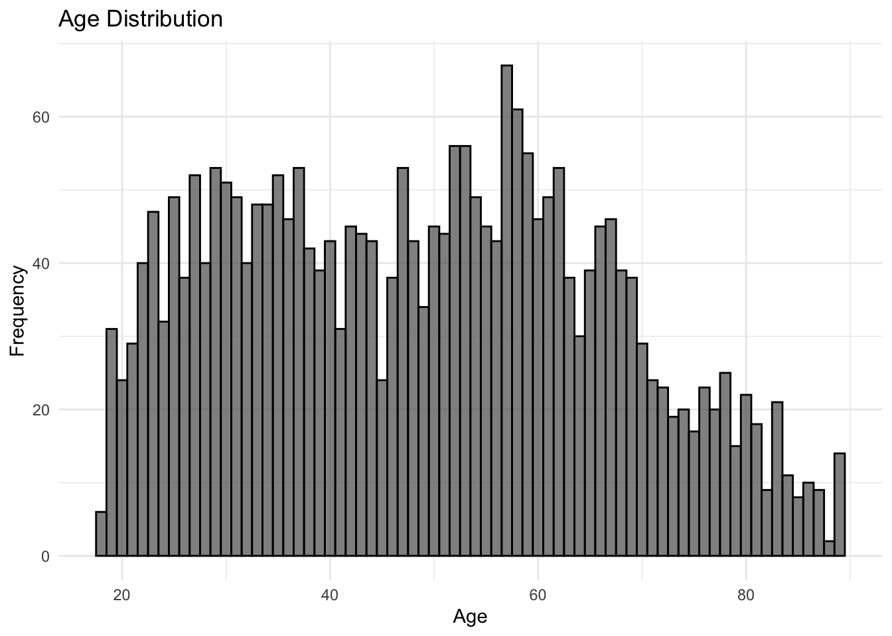
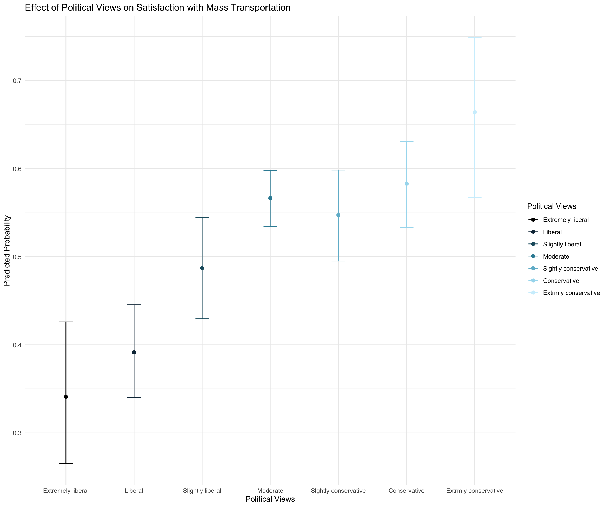
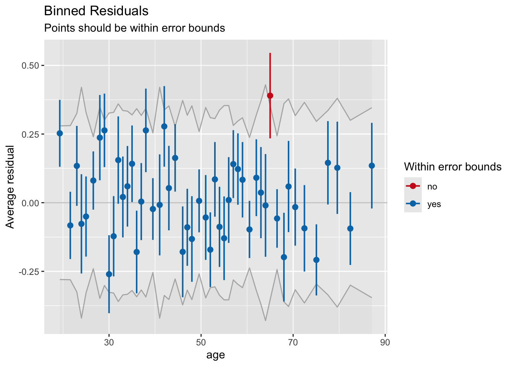
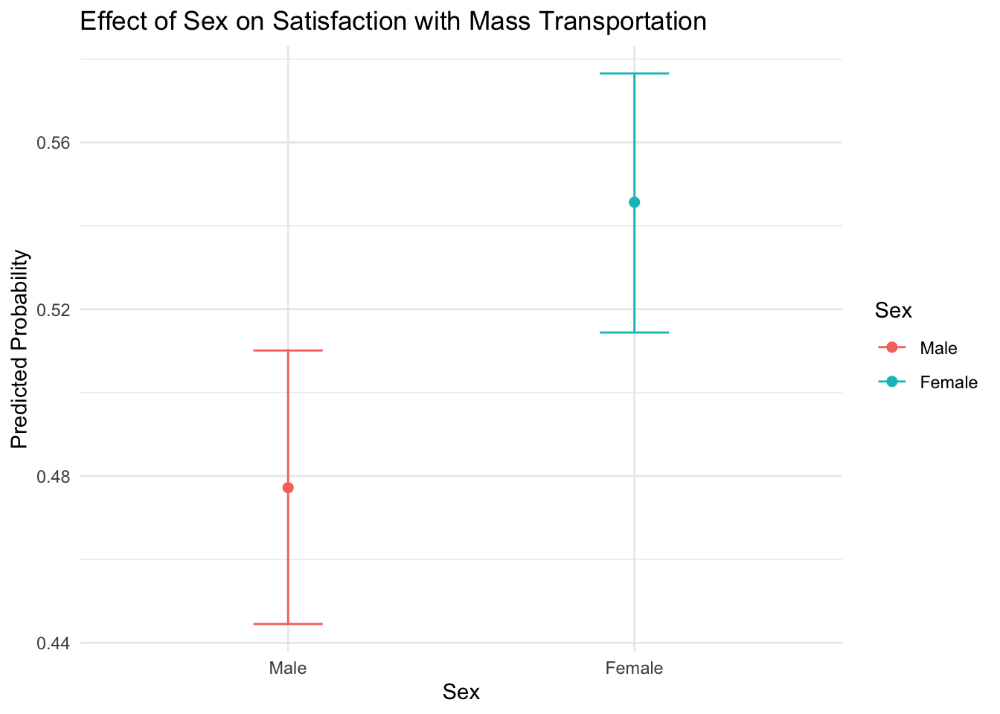

Code
library(dplyr)
library(ggplot2)
library(readr)
library(modelsummary)
library(tidyr)
library(knitr)
library(easystats)
library(broom)
library(emmeans)
library(marginaleffects)
library(performance)
library(arm)
library(modelsummary)
library(here)Princeton University
Let’s begin by making a binary variable for respondents’ views on spending on mass transportation. Create a new variable that is equal to “1” if a respondent said spending on mass transportation is about right and “0” otherwise. Then plot the proportion of the response variable, using informative labels for each category.
library(dplyr)
library(ggplot2)
library(readr)
library(modelsummary)
library(tidyr)
library(knitr)
library(easystats)
library(broom)
library(emmeans)
library(marginaleffects)
library(performance)
library(arm)
library(modelsummary)
library(here)# Set the working directory
setwd(here::here("pages/logisitc-regression"))
# load data
data <- read.csv("gss2016.csv")
# look at the data
head(data) natmass age sex sei10 region polviews
1 Too little 47 Male 87.9 New england Moderate
2 Too little 61 Male 38.3 New england Liberal
3 Too much 43 Female 21.8 New england Moderate
4 Too little 55 Female 39.7 New england Slightly liberal
5 About right 53 Female 44.6 New england Slightly liberal
6 Too little 50 Male 80.7 New england Slightly liberal# See what `natmass` levels exist
unique(data$natmass)[1] "Too little" "Too much" "About right"Fill in the “____” below to encode the binary variable
data <- data %>%
mutate(mass_trans_spend_right = as.numeric(natmass == "About right"))
head(data$mass_trans_spend_right)[1] 0 0 0 0 1 0#Get proportions
mass_spend_summary <- data %>%
count(mass_trans_spend_right) %>%
mutate(proportion = n / sum(n))
#Look at the dataframe structure. And make sure it's in a format that you can use for plotting.
#Change structure if neederd
mass_spend_long <- mass_spend_summary %>% mutate(opinion="Proportion")
#Factorise for plot
mass_spend_long$mass_trans_spend_right <- as.factor(mass_spend_long$mass_trans_spend_right)
#Make plot
#Hint: geom_bar lets you make stacked bar charts
ggplot(mass_spend_long, aes(x = opinion, y = proportion, fill = mass_trans_spend_right)) + geom_bar(stat = "identity")
Recode
polviewsso it is a factor with levels that are in an order that is consistent with question on the survey. Note how the categories are spelled in the data.
data <- data %>%
mutate(polviews = factor(polviews,
levels = c("Extremely liberal", "Liberal", "Slightly liberal",
"Moderate", "Slghtly conservative","Conservative", "Extrmly conservative"),
ordered = TRUE))Make a plot of the distribution of
polviews
# Get proportions
poly_summary <- data %>%
count(polviews) %>%
mutate(proportion_o = n / sum(n))
# Keep the data structure appropriate for plotting
poly_long <- poly_summary %>% mutate(opinion="Proportion")
# Convert polviews into a factor if not already
poly_long$polviews <- as.factor(poly_long$polviews)
# Plot the proportions
ggplot(poly_long, aes(x = opinion, y = proportion_o, fill = polviews)) +
geom_bar(stat = "identity")
Which political view occurs most frequently in this data set?
_____
Make a plot displaying the relationship between satisfaction with mass transportation spending and political views. Use the plot to describe the relationship the two variables.
# Plot the relationship between satisfaction with mass transportation spending and political views
ggplot(data, aes(x = polviews, fill = mass_trans_spend_right)) +
geom_bar(position = "fill") +
labs(title = "Relationship between Political Views and Satisfaction with Mass Transportation Spending",
x = "Political Views",
y = "Proportion",
fill = "Satisfaction with Spending") +
theme_minimal()
The more conservative one’s political views are the more they think the amount of spending on mass transportation is correct.
Recode age so that is a numeric variable. Note: Before making the variable numeric, you will need to replace the values “89 or older” with a single value.
data <- data %>%
mutate(age = if_else(age == "89 or older", "89", age),
age = as.numeric(age))Plot the frequency distribution of age.
ggplot(data, aes(x = age)) +
geom_histogram(binwidth = 1,color='black', alpha = 0.7) +
labs(title = "Age Distribution",
x = "Age",
y = "Frequency") +
theme_minimal()
Let’s start by fitting a logistic regression model with just the intercept
intercept_only_model <- glm(
mass_trans_spend_right ~ 1,
data = data,
family = binomial
)
intercept_only_model %>%
tidy() %>%
kable()| term | estimate | std.error | statistic | p.value |
|---|---|---|---|---|
| (Intercept) | 0.1190594 | 0.0393685 | 3.024229 | 0.0024927 |
Interpret the intercept in the context of the data. You can do this by converting the \(\beta_0\) parameter out of the log-odds metric to the probability metric. Make sure to include the 95% confidence intervals. Then interpret the results in a sentence or two–what is the basic thing this probability tells us about?
b0 <- coef(intercept_only_model)[1] # get coef
b0_transformed <- exp(b0) / (1 + exp(b0)) # logistic transform
ci_lower = b0 - 1.96 * 0.0393685
ci_upper = b0 + 1.96 * 0.0393685
#transforming confidence intervals of coefficients into probabilities
p_lower = exp(ci_lower) / (1 + exp(ci_lower))
p_upper = exp(ci_upper) / (1 + exp(ci_upper))
b0_transformed(Intercept)
0.5297297 p_lower(Intercept)
0.5104727 p_upper(Intercept)
0.5488986 Interpretation: The intercept-only model’s intercept (β0) represents the log-odds of a respondent being satisfied with mass transportation spending when all predictors are at their reference levels. Converting this to the probability metric, the probability of a respondent being satisfied with mass transportation spending is approximately 0.53 (95% CI [0.51, 0.55]). This tells us that, on average, about 53% of respondents are satisfied with the current spending on mass transportation.
Now let’s fit a model using the demographic factors -
age,sex,sei10- to predict the odds a person is satisfied with spending on mass transportation. Make any necessary adjustments to the variables so the intercept will have a meaningful interpretation. Neatly display the model coefficients (do not display the summary output)
#make sure that sex is a factor (i.e. to make sure R knows it's binary/categorical, and not continuous)
data <- data %>%
mutate(sex = factor(sex, levels = c("Male", "Female")))
#fit with glm()
m1 <- glm(mass_trans_spend_right ~ age + sex + sei10, data = data, family = binomial)
#produce tidy output of model coefficients
m1 %>%
tidy() %>%
kable()| term | estimate | std.error | statistic | p.value |
|---|---|---|---|---|
| (Intercept) | 0.5697071 | 0.1409061 | 4.043169 | 0.0000527 |
| age | -0.0061659 | 0.0022824 | -2.701502 | 0.0069027 |
| sexFemale | 0.2557439 | 0.0798020 | 3.204732 | 0.0013519 |
| sei10 | -0.0062271 | 0.0016609 | -3.749229 | 0.0001774 |
Consider the relationship between sex and one’s opinion about spending on mass transportation. Interpret the coefficient of sex in terms of the logs odds and OR of being satisfied with spending on mass transportation. What are the predicted probabilities for males and females on support for spending on mass transportation? Please include the 95% CIs around each estimate.
m1 %>%
tidy() %>%
kable()| term | estimate | std.error | statistic | p.value |
|---|---|---|---|---|
| (Intercept) | 0.5697071 | 0.1409061 | 4.043169 | 0.0000527 |
| age | -0.0061659 | 0.0022824 | -2.701502 | 0.0069027 |
| sexFemale | 0.2557439 | 0.0798020 | 3.204732 | 0.0013519 |
| sei10 | -0.0062271 | 0.0016609 | -3.749229 | 0.0001774 |
m1 %>%
tidy(exponentiate = TRUE) %>%
kable()| term | estimate | std.error | statistic | p.value |
|---|---|---|---|---|
| (Intercept) | 1.7677492 | 0.1409061 | 4.043169 | 0.0000527 |
| age | 0.9938530 | 0.0022824 | -2.701502 | 0.0069027 |
| sexFemale | 1.2914219 | 0.0798020 | 3.204732 | 0.0013519 |
| sei10 | 0.9937922 | 0.0016609 | -3.749229 | 0.0001774 |
bsex <- coef(m1)["sexFemale"]
ci_lower_lo = bsex - 1.96 * 0.0798020
ci_upper_lo = bsex + 1.96 * 0.0798020
ci_lower_or = 1.29 - 1.96 * 0.0798020
ci_upper_or = 1.29 + 1.96 * 0.0798020
emm_sex <- emmeans(m1, "sex", type = "response")
cifunction (x, ...)
{
UseMethod("ci")
}
<bytecode: 0x116194c90>
<environment: namespace:bayestestR>If you did this right, you’ll find that being female (as compared to male) is associated with an increase in the log-odds of being satisfied with spending on mass transportation by 0.2557439 units (95% CI [0.09, 0.41]), holding all other variables constant. This equates to the odds of thinking the spending amount is right in females being 1.29 times the odds of thinking this in men (95% CI [1.13, 1.44]).
The predicted probability for females to be satisfied with spending on mass transportation is 55.9% (95% CI [53.3%, 58.5%]) and that of males is 49.5% (95% CI [46.7%, 52.4%]).
Verify this.
Next, consider the relationship between age and one’s opinion about spending on mass transportation. Interpret the coefficient of age in terms of the logs odds and OR of being satisfied with spending on mass transportation. Please include the 95% CIs around each estimate.
bage <- coef(m1)["age"]
ci_lower_age = bage - 1.96 * 0.005
ci_upper_age = bage + 1.96 * 0.005
#transforming confidence intervals of coefficients into odds ratios
or_age = exp(bage)
or_lower_age = exp(ci_lower_age)
or_upper_age = exp(ci_upper_age)
bage age
-0.00616594 or_age age
0.993853 or_lower_age age
0.9841608 or_upper_age age
1.003641 A one unit increase in age is associated with a decrease in the log-odds of being satisfied with spending on mass transportation by -0.0061659 (95% CI [-0.0159659, 0.0036341]), holding all other variables constant. The odds ratio is 0.993853 (95% CI [0.9841608, 1.0036407])which confirms the negative relationship implied by the log-odds coefficient. Specifically, for each additional unit of age, the odds of being satisfied with mass transportation spending decrease by a factor of about 0.993853, or approximately 0.6146969% per unit increase in age, holding other factors constant.
Consider the relationship between SES and one’s opinion about spending on mass transportation. Interpret the coefficient of SES in terms of the logs odds and OR of being satisfied with spending on mass transportation. Please include the 95% CIs around each estimate. ß
bses <- coef(m1)["sei10"]
ci_lower_ses = bses - 1.96 * 0.0023
ci_upper_ses = bses + 1.96 * 0.0023
#transforming confidence intervals of coefficients into odds ratios
or_ses = exp(bses)
or_lower_ses = exp(ci_lower_ses)
or_upper_ses = exp(ci_upper_ses)
bses sei10
-0.006227141 or_ses sei10
0.9937922 or_lower_ses sei10
0.9893223 or_upper_ses sei10
0.9982823 A one unit increase in SES index is associated with a decrease in the log-odds of being satisfied with spending on mass transportation by 0.0062 units (95% CI [-0.0107, -0.0017]), holding all other variables constant. The odds ratio is less than 1 (0.9937922), which confirms the negative relationship implied by the log-odds coefficient. Specifically, for each additional unit of SES index, the odds of being satisfied with mass transportation spending decrease by a factor of about 0.993, or approximately 0.7% per unit increase in SES index, holding other factors constant (95% CI [0.989, 0.998]).
Calculate the marginal effects of sex, age, and SES on mass transportation spending. You can use the
marginspackage functionmarginsdiscussed in your textbook or you can use themarginaleffectspackageavg_slopeavg_comparisonsdiscussed in lecture. Interpret each estimate.
# Calculate the marginal effects using the marginaleffects package
marginal_effects <- avg_comparisons(m1, comparison = "difference")
# Display the results
marginal_effects %>%
kable()| term | contrast | estimate | std.error | statistic | p.value | s.value | conf.low | conf.high |
|---|---|---|---|---|---|---|---|---|
| age | +1 | -0.0015153 | 0.0005579 | -2.716128 | 0.0066050 | 7.242216 | -0.0026088 | -0.0004219 |
| sei10 | +1 | -0.0015304 | 0.0004039 | -3.789361 | 0.0001510 | 12.692829 | -0.0023219 | -0.0007388 |
| sex | Female - Male | 0.0630688 | 0.0196461 | 3.210251 | 0.0013262 | 9.558495 | 0.0245632 | 0.1015743 |
# Extract and interpret the marginal effects
marginal_effects_summary <- marginal_effects %>%
summarise(
term = term,
estimate = estimate,
std.error = std.error,
conf.low = conf.low,
conf.high = conf.high,
p.value = p.value
)
marginal_effects_summary term estimate std.error conf.low conf.high p.value
1 age -0.001515340 0.0005579046 -0.002608813 -0.0004218672 0.0066050434
2 sei10 -0.001530384 0.0004038632 -0.002321941 -0.0007388263 0.0001510351
3 sex 0.063068756 0.0196460526 0.024563200 0.1015743113 0.0013261921age_estimate <- marginal_effects_summary$estimate[marginal_effects_summary$term == "age"]
age_conf_h <- marginal_effects_summary$conf.high[marginal_effects_summary$term == "age"]
age_conf_l <- marginal_effects_summary$conf.high[marginal_effects_summary$term == "age"]
age_p <- marginal_effects_summary$p.value[marginal_effects_summary$term == 'age']
ses_estimate <- marginal_effects_summary$estimate[marginal_effects_summary$term == "sei10"]
ses_conf_h <- marginal_effects_summary$conf.high[marginal_effects_summary$term == "sei10"]
ses_conf_l <- marginal_effects_summary$conf.high[marginal_effects_summary$term == "sei10"]
ses_p <- marginal_effects_summary$p.value[marginal_effects_summary$term == 'sei10']
fem_estimate <- marginal_effects_summary$estimate[marginal_effects_summary$term == "sex"]
fem_conf_h <- marginal_effects_summary$conf.high[marginal_effects_summary$term == "sex"]
fem_conf_l <- marginal_effects_summary$conf.high[marginal_effects_summary$term == "sex"]
fem_p <- marginal_effects_summary$p.value[marginal_effects_summary$term == 'sex']The marginal effect of age is -0.0015153 (95% CI [-4.2186724^{-4}, -4.2186724^{-4}]). So, for each additional unit increase of age, the probability of being satisfied with mass transportation spending decreases by approximately -0.151534 percentage points, holding other factors constant (p = 0.006605).
The marginal effect of SES is -0.0015304 (95% CI [-7.3882629^{-4}, -7.3882629^{-4}]). For each one-unit increase in the socioeconomic index, the probability of being satisfied with mass transportation spending decreases by approximately -0.1530384 percentage points, holding other variables constant (p = 1.5103506^{-4}).
The marginal effect for being female compared to male is 0.0630688 (95% CI [0.1015743, 0.1015743]). This indicates that females are, on average, about 6.3068756 percentage points more likely than males to be satisfied with mass transportation spending, holding other factors constant (p = 0.0013262).
Conduct a drop-in-deviance/likelihood ratio test to determine if polviews is a significant predictor of attitude towards spending on mass transportation. Name these two models
fit2andfit3, respectively. Compare the two models.
fit2 <- glm(mass_trans_spend_right ~ age + sex + sei10, data = data, family = binomial)
fit3 <- glm(mass_trans_spend_right ~ age + sex + sei10 + polviews, data = data, family = binomial)
test_likelihoodratio(fit2, fit3) %>% kable()| Name | Model | df | df_diff | Chi2 | p | |
|---|---|---|---|---|---|---|
| fit2 | fit2 | glm | 4 | NA | NA | NA |
| fit3 | fit3 | glm | 10 | 6 | 63.02844 | 0 |
Is the model with polviews better than the model without?
Let’s plot the results
We next use the model to produce visualizations:
Given the code below, interpret what is being plotted:
- pol_plot : This plot shows the predicted probability of being satisfied with mass transportation spending across different political views, with error bars representing the 95% confidence intervals.
- sex_plot : This plot shows the predicted probability of being satisfied with mass transportation spending for males and females, with error bars representing the 95% confidence intervals.
- ses_plot: This plot shows the predicted probability of being satisfied with mass transportation spending across different levels of socioeconomic status (SES), with a confidence interval band representing the 95% confidence intervals.::: callout-tip - adjust the various settings in your plot to make it look professional.
ggeffects to get the predicted probabilities for these models. :::library(ggeffects)
colors <- c("Extremely liberal" = "black",
"Liberal" = "#0e2f44", # Dark blue
"Slightly liberal" = "#1d5a6c", # Less dark blue
"Moderate" = "#358ca3", # Medium blue
"Slghtly conservative" = "#71b9d1", # Light blue
"Conservative" = "#a6dcef", # Lighter blue
"Extrmly conservative" = "#d0f0fd") # Very light blue
pp_pol <- ggemmeans(fit3, terms = c("polviews"))
# Adjusted plot with gradient colors
pol_plot <- ggplot(pp_pol, aes(x = x, y = predicted, color = x)) +
geom_point(size = 2) +
geom_errorbar(aes(ymin = conf.low, ymax = conf.high), width = 0.2) +
scale_color_manual(values = colors) +
labs(title = "Effect of Political Views on Satisfaction with Mass Transportation",
x = "Political Views", y = "Predicted Probability",
color = "Political Views") +
theme_minimal()
pol_plot
pp_sex <- ggemmeans(fit3, terms = c("sex"))
sex_plot <- ggplot(pp_sex, aes(x = x, y = predicted, color = x)) +
geom_point(size = 2) +
geom_errorbar(aes(ymin = conf.low, ymax = conf.high), width = 0.2) +
labs(title = "Effect of Sex on Satisfaction with Mass Transportation",
x = "Sex", y = "Predicted Probability",
color = "Sex") +
theme_minimal()
pp_sex# Predicted probabilities of mass_trans_spend_right
sex | Predicted | 95% CI
-------------------------------
Male | 0.48 | 0.44, 0.51
Female | 0.55 | 0.51, 0.58
Adjusted for:
* age = 48.90
* sei10 = 46.07pp_ses <- ggemmeans(fit3, terms = "sei10")
ses_plot <- ggplot(pp_ses, aes(x = x, y = predicted)) +
geom_line(color = "#2c7fb8", size = 1) +
geom_ribbon(aes(ymin = conf.low, ymax = conf.high), fill = "#2c7fb8", alpha = 0.2) + # Add a confidence interval band
labs(title = "Effect of SES on Satisfaction with Mass Transportation",
x = "Socioeconomic Status", y = "Predicted Probability") +
theme_minimal() +
theme(legend.position = "none")
ses_plot
binned_residuals(fit2)Warning: About 86% of the residuals are inside the error bounds (~95% or higher would be good).Answer: The model is not a very good choice since it doesn’t fit the data well. Only 86% of the residuals are in the erro bounds while >95% are expected.
r2 <- r2_mcfadden(fit2)
R2 = r2$R2R2 interpretation: The McFadden’s R2 value for this model is an indicator of the model’s goodness of fit. A higher R2 value suggests a better fit, meaning the model explains a larger proportion of the variance in the response variable. Here only 0.9924817% of the variance are explained suggesting a low fit.
Next, Take a look at the binned residual plots for each continuous predictor variable and look at linearity. Is there a predictor that sticks out? What can we do to improve model fit in this case?
binned_residuals(fit2, term="sei10")Warning: About 88% of the residuals are inside the error bounds (~95% or higher would be good).binned_residuals(fit2, term="age")Ok: About 98% of the residuals are inside the error bounds.binned_residuals(fit2, term="sei10") %>% plot(show_dots=TRUE)
binned_residuals(fit2, term="age") %>% plot(show_dots=TRUE)
Age sticks out in a positive way.
emmeans(fit3, "polviews") %>% pairs() %>% as.data.frame() %>% filter(p.value < .05) contrast estimate SE df z.ratio
Extremely liberal - Moderate -0.9266262 0.1950664 Inf -4.750
Extremely liberal - Slghtly conservative -0.8487137 0.2127293 Inf -3.990
Extremely liberal - Conservative -0.9935486 0.2108369 Inf -4.712
Extremely liberal - Extrmly conservative -1.3402621 0.2792876 Inf -4.799
Liberal - Moderate -0.7090022 0.1308520 Inf -5.418
Liberal - Slghtly conservative -0.6310897 0.1555805 Inf -4.056
Liberal - Conservative -0.7759246 0.1532081 Inf -5.065
Liberal - Extrmly conservative -1.1226380 0.2392048 Inf -4.693
Slightly liberal - Extrmly conservative -0.7334002 0.2412625 Inf -3.040
p.value
<.0001
0.0013
0.0001
<.0001
<.0001
0.0010
<.0001
0.0001
0.0382
Results are averaged over the levels of: sex
Results are given on the log odds ratio (not the response) scale.
P value adjustment: tukey method for comparing a family of 7 estimates emmeans(fit3, "polviews", type="response") %>% pairs() %>% as.data.frame() %>% filter(p.value < .05) contrast odds.ratio SE df null
Extremely liberal / Moderate 0.3958871 0.07722426 Inf 1
Extremely liberal / Slghtly conservative 0.4279651 0.09104070 Inf 1
Extremely liberal / Conservative 0.3702605 0.07806458 Inf 1
Extremely liberal / Extrmly conservative 0.2617771 0.07311109 Inf 1
Liberal / Moderate 0.4921350 0.06439684 Inf 1
Liberal / Slghtly conservative 0.5320118 0.08277063 Inf 1
Liberal / Conservative 0.4602780 0.07051835 Inf 1
Liberal / Extrmly conservative 0.3254202 0.07784206 Inf 1
Slightly liberal / Extrmly conservative 0.4802732 0.11587191 Inf 1
z.ratio p.value
-4.750 <.0001
-3.990 0.0013
-4.712 0.0001
-4.799 <.0001
-5.418 <.0001
-4.056 0.0010
-5.065 <.0001
-4.693 0.0001
-3.040 0.0382
Results are averaged over the levels of: sex
P value adjustment: tukey method for comparing a family of 7 estimates
Tests are performed on the log odds ratio scale Conservatives are 2.7027027 times more likely to support mass transit spending compared to extremely liberal and liberal
Extreme liberals are .37, , .4, .43 times as likely to support spending compared to conservatives, moderates and slight conservatives
Extreme conservatives are 3.030303, 2.0833333 times more likely to support mass spending than liberals and slight liberals
Liberals are .49, .46 times more likely to support spending than moderates and slight conservatives.
The model best predicts satisfaction with mass transportation when it includes age, sex, socioeconomic status (SES), and political views (polviews) as predictors. Specifically, the results indicate that:
These findings suggest that political ideology, gender, and socioeconomic background all play a role in shaping public attitudes toward mass transportation.
| Df | Deviance | Resid. Df | Resid. Dev | Pr(>Chi) | |
|---|---|---|---|---|---|
| NULL | NA | NA | 2589 | 3581.340 | NA |
| age | 1 | 9.268443 | 2588 | 3572.072 | 0.0023314 |
| sex | 1 | 12.156624 | 2587 | 3559.915 | 0.0004891 |
| sei10 | 1 | 14.119078 | 2586 | 3545.796 | 0.0001716 |
| polviews | 6 | 63.028441 | 2580 | 3482.768 | 0.0000000 |
Table 1
